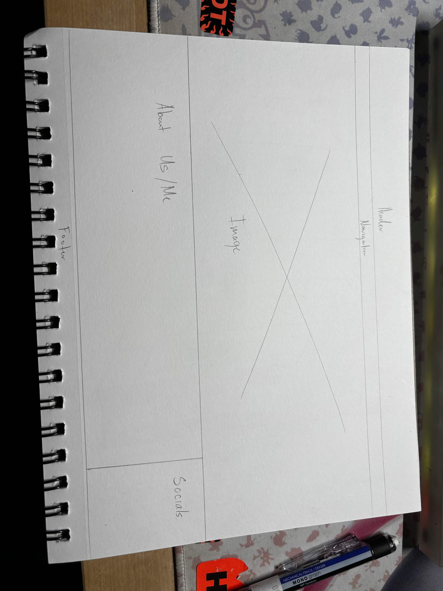

When a visitor encounters my page, I want them to see my work immediately. This way, it will give them a better
look at my professional work and my previous work. This way, the visitor can get ideas and also contact me if
they
want a certain artwork done that I have done previously. Information that belongs on the entry page would be
social
media, about me, and a good way to contact the owner or company. Something we can also put could be reviews from
either Google or Yelp! I want someone to move through my pages through hyperlinks or scroll down and click on
the
section they need. Since I plan to do photography and graphic design, they can choose which service they would
like.
Something that should remain consistent is the navigation, header, and socials/contact us down in the header.
This
way, visitors can always head back to the home page or contact us when they are ready to start a new project
with
me. As the site gets larger, I think I will have to change the navigation page to sort all of my pages later on.
Knowing I have a lot of pages to fill in.
9/23
I added a lot to the CSS page, I made the Navigation align to the center. I am still trying to seperate it tho. But
I just placed a small border between each hyperlink. I was debating to target=blank it or not but I had the the home
navigation which should be fine. I didn't change any of the color yet tho except *HR*. I am very proud of how *NAV*
turned out, I did struggle with the underlined a ref but I figured it out. It was just like our previous CSS
practice.
10/5
I finally made my website live. I was in class but I was catching up on previous website work. Thank god there was
the recording of the zoom. I followed along the video and it was a breeze, only thing that I encountered was the
page2 folder as well. I had to make another folder and then delete .github abd .vss or something like that in order
to republish that folder. Weird but I think it was a active folder preventing it from going into github. Anyways I
like the website and I hope to keep it haha.